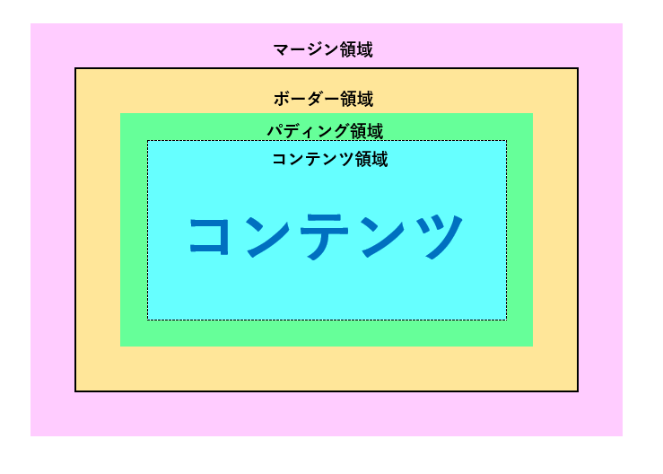

文字や画像などのコンテンツがあったとして、それを取り巻く領域は以下の通り、
マージン領域、ボーダー領域、パディング領域と呼ばれています。

1. コンテンツ領域
テキストや画像など、実際の内容が表示される部分。
2. パディング領域
コンテンツとボーダーの間の内側の余白。内容を囲むスペース。
3. ボーダー領域
パディングの外側にある線や枠。コンテンツを囲む枠線部分。
4. マージン領域
ボーダーの外側の余白。隣接する要素との間隔を作るスペース。